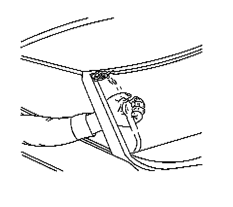

Air Hose Test
Air Hose Test

Notice: The air hose test should only be used on fully cured urethane adhesive. Otherwise, damage to the urethane adhesive bead could result in additional leaks.
1. Using a liquid detergent, diluted with water in a spray bottle, spray the window at the edges. Begin at the bottom and gradually move up and across the top.
Important: The compressed air should not exceed 205 kPa (30 psi).
2. Have an assistant inside of the vehicle with an air hose.
3. Have the assistant aim the compressed air at the suspected areas.
Bubbles will form in the soap solution at the location of the leak.